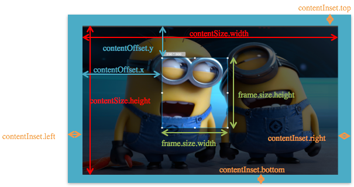
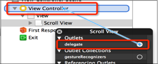

@property(nonatomic) CGPoint contentOffset;
这个属性用来表示UIScrollView滚动的位置
（其实就是内容左上角与scrollView左上角的间距值）
@property(nonatomic) CGSize contentSize;
这个属性用来表示UIScrollView内容的尺寸，滚动范围（能滚多远）
@property(nonatomic) UIEdgeInsets contentInset;
这个属性能够在UIScrollView的4周增加额外的滚动区域，一般用来避免scrollView的内容被其他控件挡住
如果UIScrollView无法滚动，可能是以下原因：

// 用户开始拖拽时调用
- (void)scrollViewWillBeginDragging:(UIScrollView *)scrollView;
// 滚动到某个位置时调用
- (void)scrollViewDidScroll:(UIScrollView *)scrollView;
// 用户结束拖拽时调用
- (void)scrollViewDidEndDragging:(UIScrollView *)scrollView willDecelerate:(BOOL)decelerate;

当用户在UIScrollView身上使用捏合手势时，UIScrollView会调用代理的viewForZoomingInScrollView:方法，这个方法返回的控件就是需要进行缩放的控件
要想实现缩放
- (UIView *)viewForZoomingInScrollView:(UIScrollView *)scrollView;
// 用户使用捏合手势时调用
- (UIView *)viewForZoomingInScrollView:(UIScrollView *)scrollView;
@property(nonatomic) BOOL bounces;
设置UIScrollView是否需要弹簧效果
@property(nonatomic,getter=isScrollEnabled) BOOL scrollEnabled;
设置UIScrollView是否能滚动
@property(nonatomic) BOOL showsHorizontalScrollIndicator;
是否显示水平滚动条
@property(nonatomic) BOOL showsVerticalScrollIndicator;
是否显示垂直滚动条